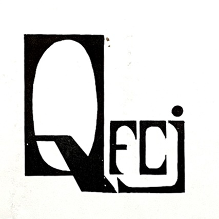
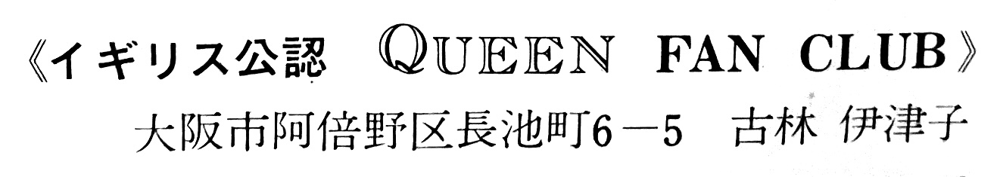
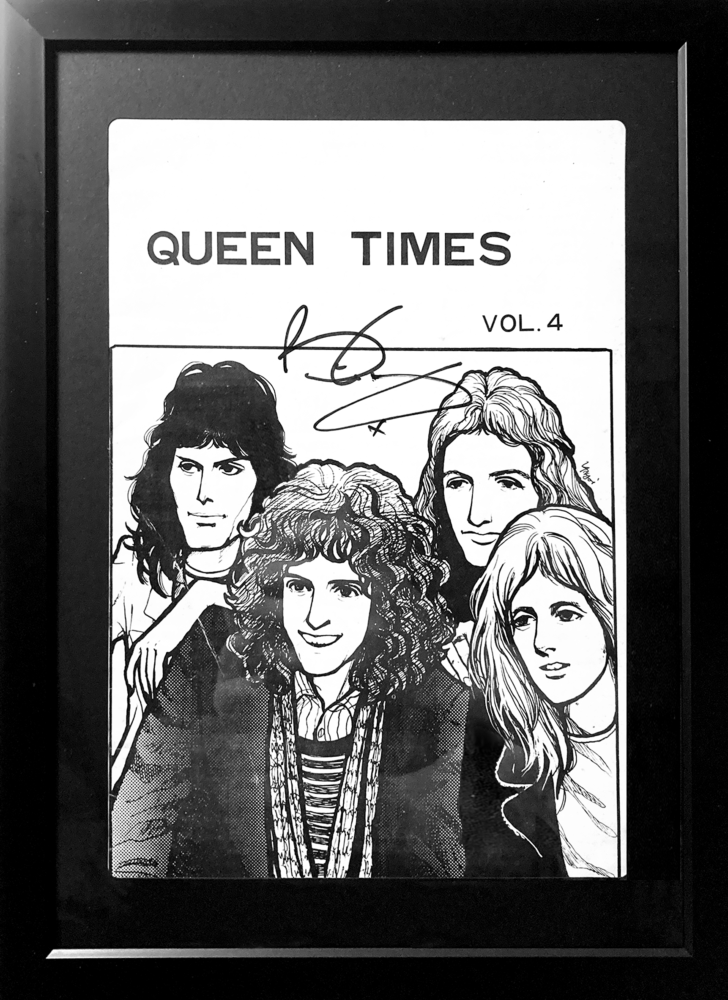
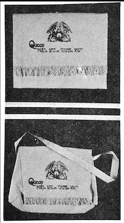

By the summer of 1974, Queen had their first relatively modest UK hit with The Seven Seas of Rhye off of Queen II, and Killer Queen, their breakthrough single, would be released later in the year; but the storied successes of A Night at the Opera, Bohemian Rhapsody, and beyond were still well over a year away. There was a small official Queen fanclub set up back in the UK, but the band was not receiving much support from their label at that time, still living in meager flats in London while not on tour, and there wasn't yet any support to set up an official foreign-language branch of the fanclub.

The Japanese fanbase at this point was relatively small, but rabid, even with little content to go on apart from the music itself. Music Life had introduced Queen to the Japanese public back in 1974, but interviews and concert footage were scarce, pictures were coveted, and records were expensive. In light of this, the Japanese Queen fanbase, made up at this point of mostly teenage girls and young women, was hungry for more from their favorite boys.
It was ultimately these tenacious girls who stepped in to fill the void left by the lack of an official Japanese fanclub in the early years. The Queen Fan Club of Japan (QFCJ) and its publication, the Queen Times, were spearheaded by an earnest high school student from Osaka named Itsuko Furubayashi ("Ikko"). Ikko founded the QFCJ in April of 1974, and the first Queen Times was issued shortly after. This was far from a slapdash side project—Ikko managed to put together an impressively professional fanclub with a regular publication that fans could subscribe to, complete with fanclub-issued numbered membership cards and even Queen merchandise. At its height, it had several employees on staff, mostly other students. Ikko curried favor and networked with Warner Pioneer, eventually gaining access to events and information and even the band itself in extraordinary ways that are usually reserved only for members of the press or industry professionals. In that way, by the time Queen came to Japan in spring of 1975 to play their historic first Japanese tour, the QFCJ and its staff were well on their way towards legitimacy.

An address for the "England-approved" Queen Fan Club of Japan was printed in the liner notes of original Japanese releases of Sheer Heart Attack. Itsuko Furubayashi is listed as the contact person.
The Queen Times magazine evolved—from Japanese translations of English magazine articles and lists of fans looking for penpals—to personal interviews with members of the band and inside info on their day-to-day activities and upcoming events. When Queen actually arrived in Japan in April 1975, they all already knew about the Queen Times and had been presented with their own copies. In addition to the regular quarterly publications, a secondary series of newsletters, titled "Queen Express", were distributed. It seems there were eight volumes of these on top of the regular Queen Times issues.
After witnessing the success the band was enjoying in Japan, Warner Pioneer began planning to set up an official Japanese fanclub during the summer of 1975, which Ikko had set her sights on heading up. There was apparently some sort of handshake deal (so-to-speak) that she would be able to roll the QFCJ over into something official there, but ultimately Warner decided to give the reins to male executives instead. The official Japanese Division of the International Queen Fanclub began operations in the fall of 1975, and the QFCJ, along with the Queen Times, was forced out of existence.

I was able to have Sir Brian May sign a copy of Queen Times 4 in 2023.
The final publication of the Queen Times was really more of a coda than anything. Reflecting its pared-down circumstances, the QFCJ swan song was Queen Express vol. 8, containing exposition and thoughts from Ikko regarding the abrupt nature with which she was forced to end her endeavor. She was clearly blindsided by the development, and discusses refunds of QFCJ fanclub members' dues for the third quarter of 1975. Interviews and features that were promised to be printed in upcoming issues seem to have faded into the Showa ether.

Merchandise was offered in Queen Times vol 4.
A few issues of the Queen Times and Queen Express (along with other vintage Japanese Queen goods) have been put on display in Queen exhibitions and pop-up stores periodically, one as recently as 2024. I don't know what became of young Ikko. Google doesn't turn up much, other than an anecdote from another older Queen fan of running into her a few years back. I have read rumors that she spent so much time managing the Queen Times and the QFCJ that she dropped out of school. I'm assuming she joined the new Official Japanese Queen Fanclub. Perhaps she continued the Queen Times under a different, clandestine name. Did she work on any of the other dozens of unofficial Japanese Queen fan publications and doujinshi? There's no information that I could find.
In any case, I decided to post the story of the Queen Times here to honor her work and the work of her cohorts, and to allow others to enjoy the fruits of their labor. The hearts of young people and girls in particular in early 1970s Japan really allowed Queen to flourish there in a magical way, and I believe the QFCJ and the Queen Times hold a special place in Queen fandom history.
Note: For Queen's 50th Anniversary, commemorative exhibition newsletters which also happened to be titled "Queen Times" were distributed in various regions of Japan. These are unrelated to the QFCJ.